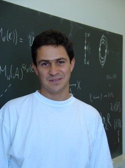

Surname: Stupariu
Christian names: Mihai-Sorin
Educatia: Absolvent al Facultatii Matematica, Universitatea Bucuresti, in 1993.
Teza de doctorat: Doctor in matematica din 1998 cu teza "Corespondenta Kobayashi-Hitchin pentru ecuatii de tip vortex cuplate cu campuri Higgs", Universitatea Zürich.
Data si locul nasterii: 25 Noiembrie 1968, Sibiu, Romania
Pozitii academice: Preparator din 1993, asistent din 1997, lector din 2005.
Email: stupariu@fmi.unibuc.ro
